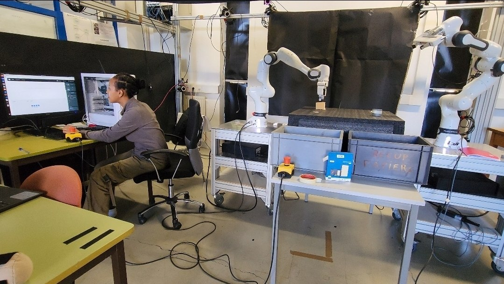
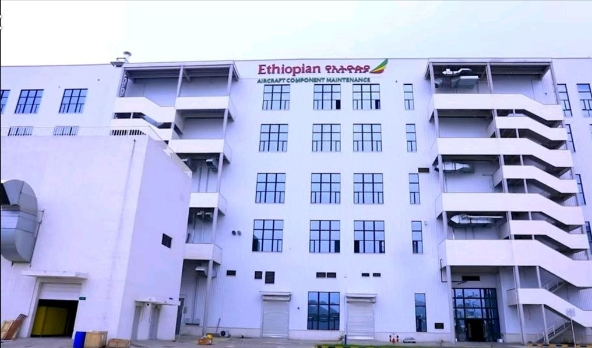

Engineering Projects & Technical Portfolio
A collection of my engineering designs, robotics research, sustainability initiatives, software projects, and STEM engagement activities.
Waste Sorting Collaborative Robot

Developed a robotics simulation project focused on automated waste sorting using collaborative robot technology. The project involved robot simulation using Isaac Sim and CoppeliaSim, motion planning using ROS2 and MoveIt, and exploring automation solutions for sustainable manufacturing.
Ethiopian Airlines Component Maintenance Internship

Completed an engineering internship at Ethiopian Airlines Component Maintenance Shop, contributing to aircraft component analysis and reverse engineering activities. Applied CAD modelling, measurement techniques, engineering drawings, and manufacturing considerations to support component evaluation and improvement.
Zelaki Recycling & Sustainable Manufacturing Project
Led mechanical design and development activities for the Zelaki sustainability initiative, focused on plastic recycling solutions. The project was developed in collaboration with Arizona State University and University of Gondar, promoting circular economy principles and environmental solutions in Ethiopia.
Abugida Robotics Internship

Completed a robotics internship at Abugida Robotics, contributing to robotics and automation projects focused on practical technology solutions. Worked on mechanical design concepts, prototyping, and robotics applications aimed at creating innovative solutions with social impact.
Temperature Controlled Ventilation System

Designed and developed an automated ventilation system using an Arduino Uno, LM35 temperature sensor, L9110 motor driver, and DC fan. Implemented a PI controller simulation using MATLAB/Simulink to regulate temperature response and improve system efficiency.
HVAC System Design


Designed a Heating, Ventilation, and Air Conditioning system for a multi-story building using Carrier HAP software. The project involved thermal load calculations, equipment selection, HVAC layout design, and energy efficiency analysis.
Centrifugal Pump Impeller Design


Designed and documented a centrifugal pump impeller manufacturing process using SolidWorks and Blender. The work included material selection, sand casting process planning, manufacturing considerations, and defect analysis.
HerWellness Mental Well-being Platform

Designed and developed HerWellness, a web application focused on supporting women's mental well-being. The platform provides access to wellness resources, community support features, and digital tools promoting health awareness and resilience.
Space Science & STEM Engagement
My involvement in space science includes:
- Fellow trainee at the Ethiopian Space Science and Geospatial Institute (SSGI).
- Active member of the Ethiopian Space Science Society (ESSS).
- Presented a youth session on Dark Matter in Dwarf Galaxies during the ESSS General Assembly.
- Participated as a node for international astronomy outreach events promoting space awareness.
UNESCO Hackathon - Fake News Quiz Platform
Developed a digital solution concept addressing misinformation challenges through interactive learning and awareness tools. The project combined technology, education, and social impact to promote digital literacy.
Leadership & STEM Community Engagement
- Managing Director of the Ethiopian Space Science Society Book Club.
- Executive member of MiNT (Mechanical Initiative) at Addis Ababa University.
- President of the School of Tomorrow Space Science Club (2022-2023).
- STEM advocate supporting youth engagement, innovation activities, and knowledge sharing.